Candidate List 20260915Last night — ZTF: 3,518 passed basic cuts (210 young) · LSST: 0 passed basic cuts (0 young)Previous Day Next Day
Section 1: New Sources (age<1d) Section 2: Old (1-5d) sources observed last nightplaceholder
Section 1: New Afterglow/FBOT Cands Last Night (0)
Section 2: Older Sources Observed Last Night (11)
0. [ZTF] ZTF26abttgxn (Afterglow?) [Back to Top] [Share] [Trigger Swift] [Fritz Alert] [Fritz Source] [Lasair]RA, Dec: 19.0427, 16.15181 1h16m10.25s, 16d 9m6.51sGalactic (l, b): 131.54506, -46.3059 ext(g-r) = 0.132


TESS: Sectors [17 42 43 57 70]
SDSS (<15 kpc):Found SDSS phot-z: z=0.08; peak abs mag = -18.65
PS1: 0 sources in 3 arcsec
LegacySurvey: 0 sources in 3 arcsec

Extinction-corrected gr color:
From alerts: -0.14 +/- 0.15 mag
Extinction-corrected gi color:
From alerts: -0.07 +/- 0.19 mag
Extinction-corrected ri color:
From alerts: -0.12 +/- 0.17 mag
Consistent with synchrotron, g-r>0!
Rise Rate:
g: 1.25 mag/day
r: 0.25 mag/day
i: 0.17 mag/day
Fade Rate:
1. [ZTF] ZTF26abtqfyy (FBOT?) [Back to Top] [Share] [Trigger Swift] [Fritz Alert] [Fritz Source] [Lasair]RA, Dec: 342.96099, 16.02355 22h51m50.64s, 16d 1m24.77sGalactic (l, b): 85.48641, -38.00262 ext(g-r) = 0.075


TESS: Sectors [56 83]
SDSS (<15 kpc):Found SDSS phot-z: z=0.20; peak abs mag = -20.22
PS1: 0 sources in 3 arcsec
LegacySurvey: 0 sources in 3 arcsec

Extinction-corrected gr color:
From alerts: -0.19 +/- 0.25 mag
Consistent with synchrotron, g-r>0!
Rise Rate:
g: 0.22 mag/day
r: 0.15 mag/day
Fade Rate:
2. [ZTF] ZTF26abuktjp (Afterglow?) [Back to Top] [Share] [Trigger Swift] [Fritz Alert] [Fritz Source] [Lasair]RA, Dec: 312.71178, 64.34754 20h50m50.83s, 64d20m51.14sGalactic (l, b): 100.29854, 12.66547 ext(g-r) = 0.55


TESS: Sectors [ 15 17 18 24 56 57 58 76 77 78 83 84 85 121]
PS1: 0 sources in 3 arcsec
LegacySurvey: 0 sources in 3 arcsec

Extinction-corrected gr color:
From alerts: -0.26 +/- 0.27 mag
Consistent with synchrotron, g-r>0!
Rise Rate:
g: 1.97 mag/day
r: 0.1 mag/day
Fade Rate:
g: 1.83 mag/day
3. [ZTF] ZTF26abupccs (Afterglow?) [Back to Top] [Share] [Trigger Swift] [Fritz Alert] [Fritz Source] [Lasair]RA, Dec: 19.69372, 14.99186 1h18m46.49s, 14d59m30.71sGalactic (l, b): 132.7019, -47.36064 ext(g-r) = 0.055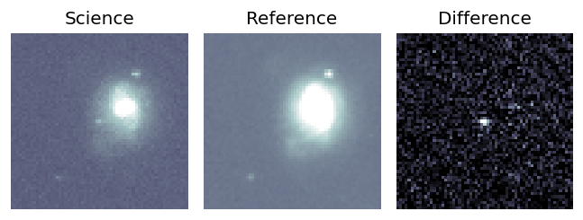
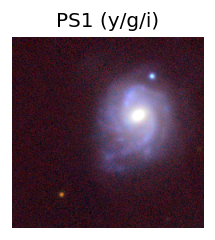
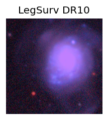
TESS: Sectors [17 42 43 70]
NED host (10 arcsec):Found SDSS J011846.46+145922.8 (G, 7.9″); NED spec-z: z=0.0228 [zflag SLS]; peak abs mag = -15.92
PS1: 0 sources in 3 arcsec
LegacySurvey: 0 sources in 3 arcsec
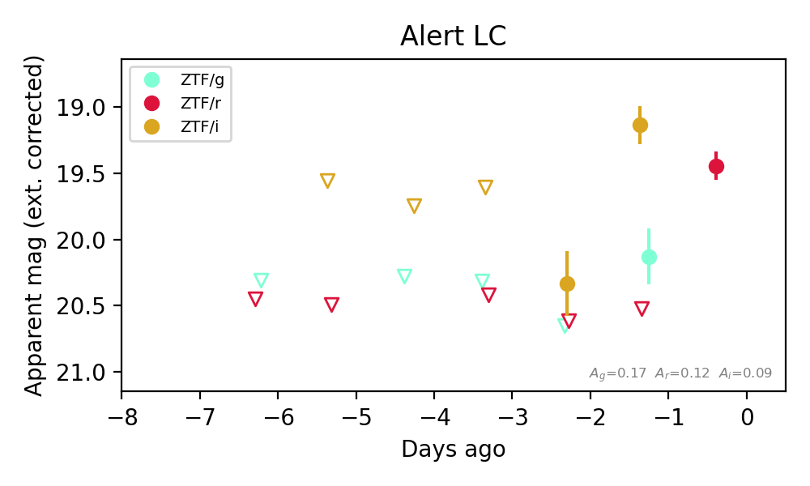
Extinction-corrected gr color:
From alerts: -0.39 +/- 99 mag
Extinction-corrected gi color:
From alerts: 0.99 +/- 0.25 mag
Extinction-corrected ri color:
From alerts: 1.39 +/- 99 mag
Consistent with synchrotron, g-r>0!
Rise Rate:
g: 0.48 mag/day
r: 1.13 mag/day
i: 1.28 mag/day
Fade Rate:
4. [ZTF] ZTF26abuuzad (Afterglow?) [Back to Top] [Share] [Trigger Swift] [Fritz Alert] [Fritz Source] [Lasair]RA, Dec: 297.69128, -2.87243 19h50m45.91s, -2d-52m-20.76sGalactic (l, b): 37.19557, -14.50032 ext(g-r) = 0.33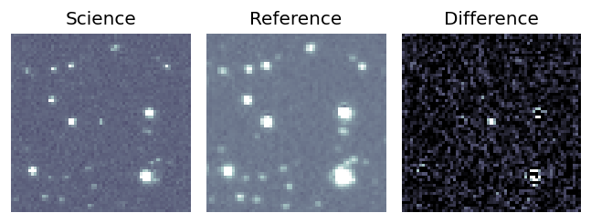
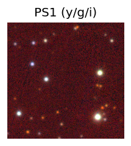

TESS: Sectors 81
PS1: 0 sources in 3 arcsec
LegacySurvey: 0 sources in 3 arcsec
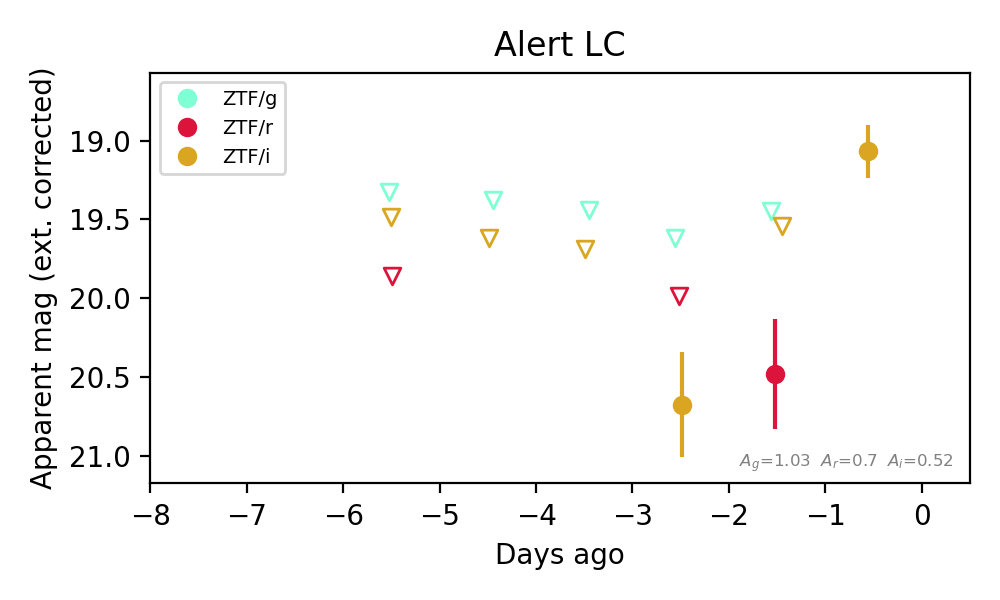
Extinction-corrected gr color:
From alerts: -1.03 +/- 99 mag
Extinction-corrected gi color:
From alerts: 0.0 +/- 0.49 mag
Extinction-corrected ri color:
From alerts: 0.94 +/- 99 mag
Consistent with synchrotron, g-r>0!
Rise Rate:
i: 0.83 mag/day
Fade Rate:
5. [ZTF] ZTF26abuvcov (Afterglow?) [Back to Top] [Share] [Trigger Swift] [Fritz Alert] [Fritz Source] [Lasair]RA, Dec: 273.86378, -11.44846 18h15m27.31s, -11d-26m-54.46sGalactic (l, b): 18.6443, 2.62985 ext(g-r) = 1.572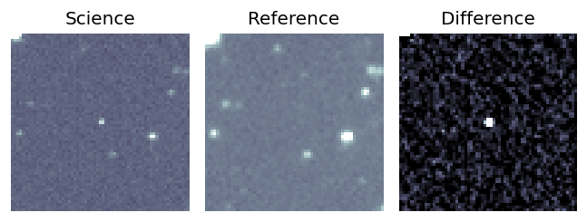
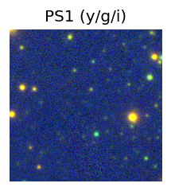

TESS: Sectors [ 80 91 118]
PS1: 0 sources in 3 arcsec
LegacySurvey: 0 sources in 3 arcsec
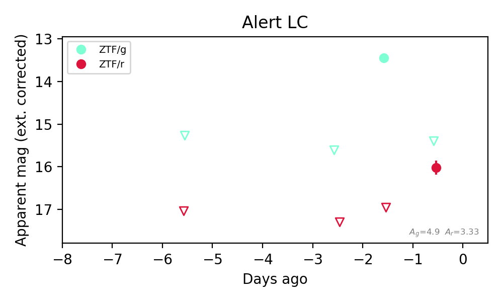
Extinction-corrected gr color:
From alerts: -0.63 +/- 99 mag
Rise Rate:
g: 2.17 mag/day
r: 0.94 mag/day
Fade Rate:
g: 1.94 mag/day
6. [ZTF] ZTF26abuwuyx (Afterglow?) [Back to Top] [Share] [Trigger Swift] [Fritz Alert] [Fritz Source] [Lasair]RA, Dec: 330.27206, -11.43929 22h 1m5.29s, -11d-26m-21.45sGalactic (l, b): 45.88337, -47.11059 WARNING: 0.65 deg from ecliptic plane ext(g-r) = 0.056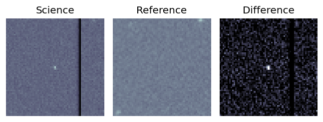
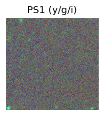
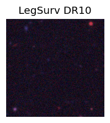
TESS: Sectors 116
PS1: 0 sources in 3 arcsec
LegacySurvey: 0 sources in 3 arcsec
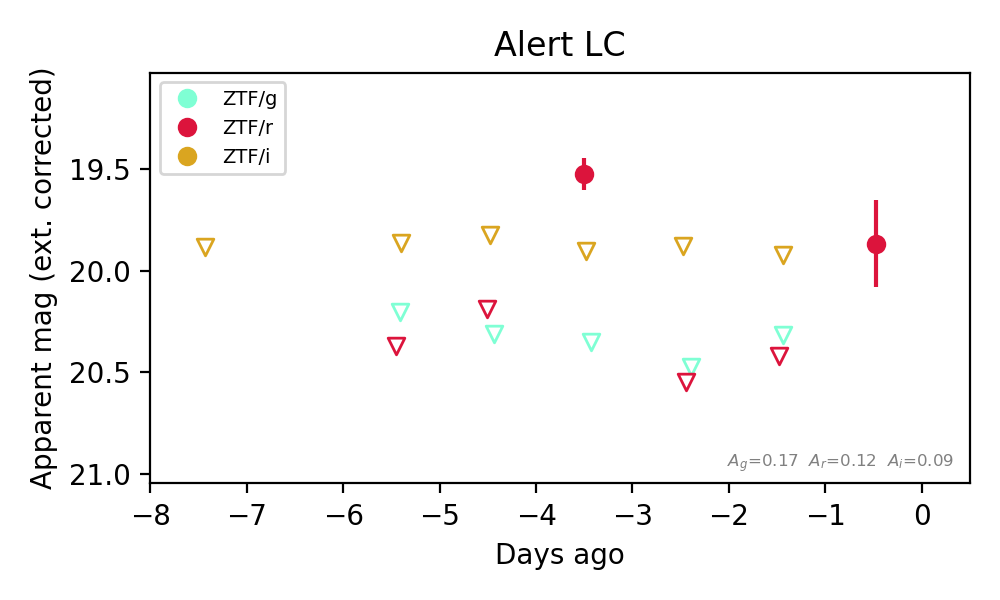
Extinction-corrected gr color:
From alerts: 0.82 +/- 99 mag
Extinction-corrected ri color:
From alerts: -0.38 +/- 99 mag
Rise Rate:
r: 0.66 mag/day
Fade Rate:
r: 0.96 mag/day
7. [ZTF] ZTF26abuxiky (Afterglow?) [Back to Top] [Share] [Trigger Swift] [Fritz Alert] [Fritz Source] [Lasair]RA, Dec: 343.78928, -3.88125 22h55m9.43s, -3d-52m-52.51sGalactic (l, b): 67.76885, -53.79928 WARNING: 2.79 deg from ecliptic plane ext(g-r) = 0.058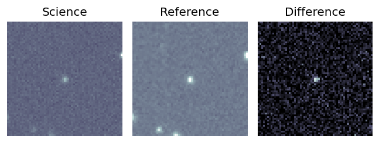
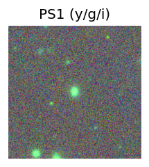
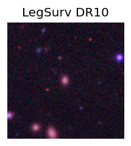
TESS: Sectors [42 70 92]
SDSS (<15 kpc):Found SDSS phot-z: z=0.19; peak abs mag = -19.79
PS1: 0 sources in 3 arcsec
LegacySurvey: 0 sources in 3 arcsec
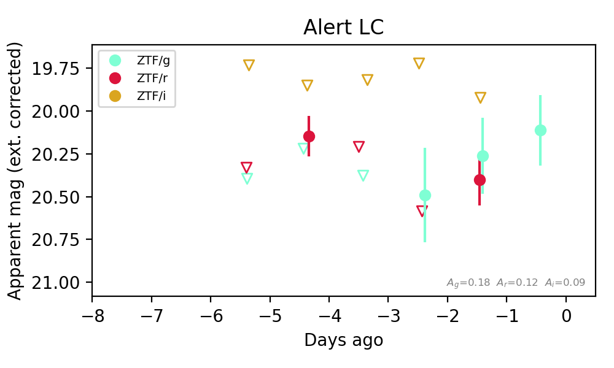
Extinction-corrected gr color:
From alerts: -0.14 +/- 0.27 mag
Extinction-corrected gi color:
From alerts: 0.34 +/- 99 mag
Extinction-corrected ri color:
From alerts: 0.48 +/- 99 mag
Consistent with synchrotron, g-r>0!
Rise Rate:
r: 0.01 mag/day
Fade Rate:
r: 0.23 mag/day
8. [ZTF] ZTF26abuyvjl (FBOT?) [Back to Top] [Share] [Trigger Swift] [Fritz Alert] [Fritz Source] [Lasair]RA, Dec: 12.4941, 22.59996 0h49m58.58s, 22d35m59.87sGalactic (l, b): 122.48983, -40.27053 ext(g-r) = 0.033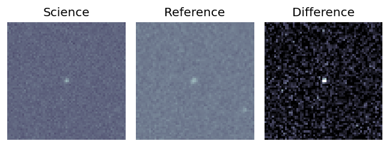
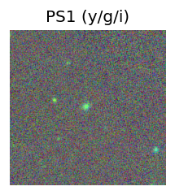
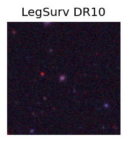
TESS: Sectors [17 57]
SDSS (<15 kpc):Found SDSS phot-z: z=0.27; peak abs mag = -20.54
PS1: 0 sources in 3 arcsec
LegacySurvey: 0 sources in 3 arcsec
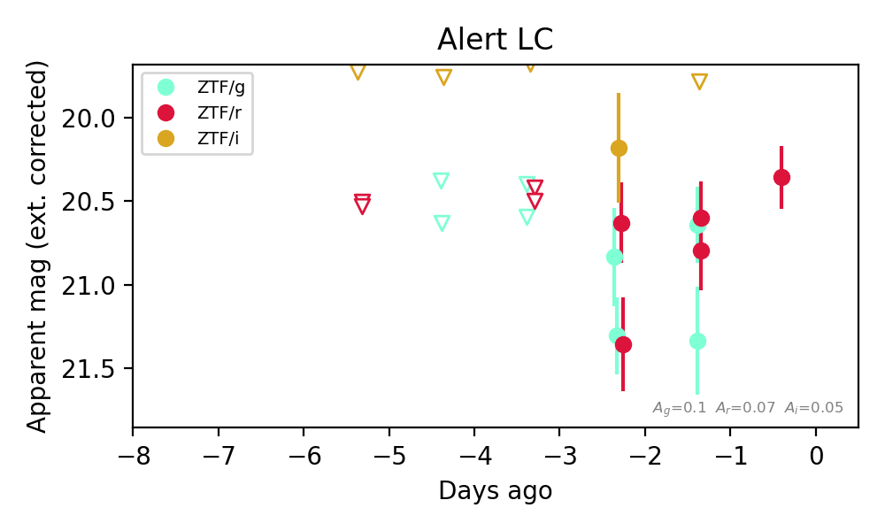
Extinction-corrected gr color:
From alerts: 0.19 +/- 0.25 mag
Extinction-corrected gi color:
From alerts: 1.09 +/- 99 mag
Extinction-corrected ri color:
From alerts: 0.9 +/- 99 mag
Consistent with synchrotron, g-r>0!
Rise Rate:
r: 0.31 mag/day
Fade Rate:
9. [ZTF] ZTF26abvanak (Afterglow?) [Back to Top] [Share] [Trigger Swift] [Fritz Alert] [Fritz Source] [Lasair]RA, Dec: 344.15151, -3.19467 22h56m36.36s, -3d-11m-40.81sGalactic (l, b): 69.03077, -53.58983 WARNING: 3.29 deg from ecliptic plane ext(g-r) = 0.063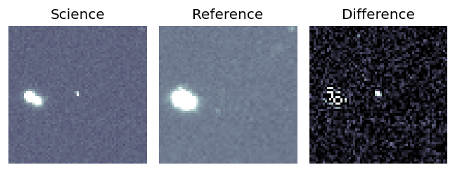
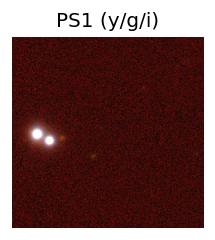
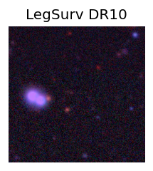
TESS: Sectors [42 70 92]
SDSS (<15 kpc):Found SDSS phot-z: z=0.52; peak abs mag = -23.62
PS1: 0 sources in 3 arcsec
LegacySurvey: 0 sources in 3 arcsec
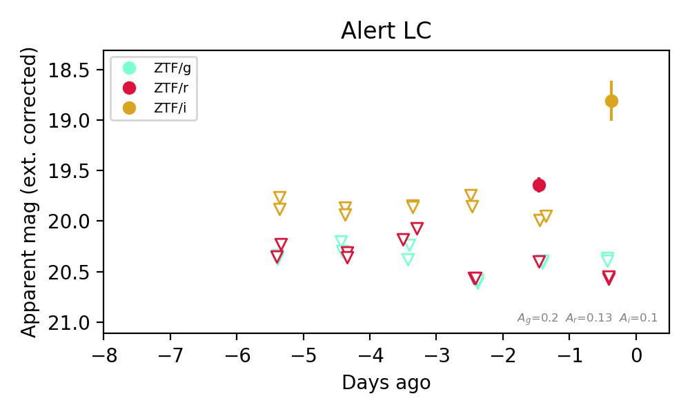
Extinction-corrected gr color:
From alerts: 0.77 +/- 99 mag
Extinction-corrected gi color:
From alerts: 1.59 +/- 99 mag
Extinction-corrected ri color:
From alerts: 1.76 +/- 99 mag
Rise Rate:
r: 0.96 mag/day
i: 1.15 mag/day
Fade Rate:
r: 0.89 mag/day
10. [ZTF] ZTF26abvanpa (FBOT?) [Back to Top] [Share] [Trigger Swift] [Fritz Alert] [Fritz Source] [Lasair]RA, Dec: 32.65111, 24.66277 2h10m36.27s, 24d39m45.99sGalactic (l, b): 144.94068, -34.80294 ext(g-r) = 0.09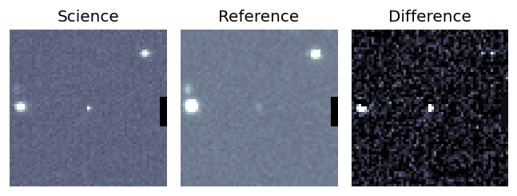
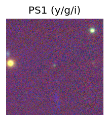
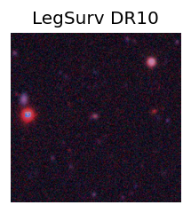
TESS: Sectors [42 43 58 70 71 85]
SDSS (<15 kpc):Found SDSS phot-z: z=0.69; peak abs mag = -23.59
PS1: 0 sources in 3 arcsec
LegacySurvey: 0 sources in 3 arcsec
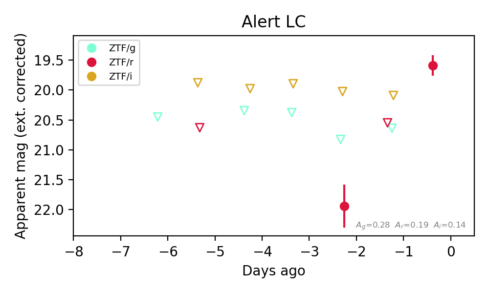
Extinction-corrected gr color:
From alerts: -1.12 +/- 99 mag
Extinction-corrected ri color:
From alerts: 1.92 +/- 99 mag
Rise Rate:
r: 1.25 mag/day
Fade Rate: